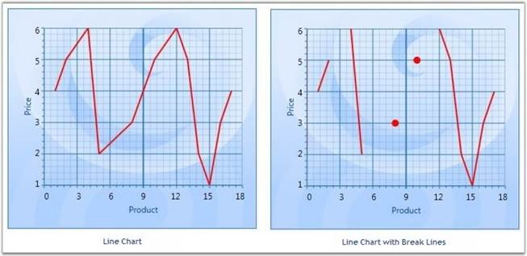

Line charts with missing data points can be drawn with gaps for the missing points. When there is a huge gap between consecutive points, we could make the lines break for more clarity.
SetBreakLineForNonIndexedData is used to specify whether the line segments could be drawn with break lines. SetBreakLineForDoublePointsDistanceMoreThan is used to set the distance for lines that should be broken.
|
[C#]
ChartLineType.SetBreakLineForNonIndexedData(Chart1.Areas[0].Series[0], true); ChartLineType.SetBreakLineForDoublePointsDistanceMoreThan(Chart1.Areas[0].Series[0], 1); |
If the data given are 1, 2, 4, 5, 8, 10, 12, 13, 14, 15, 16, 17 and the SetBreakLineForDoublePointsDistanceMoreThan is passed with a value 1, all points that don't have a point after 1 will not be drawn. Below screen shot shows the output for this data.

Figure 162: Line Segments in the Line Chart drawn with Break Lines
 Note: This feature can be applied for both Line
and Spline type charts. This can be applied for both Double and DateTime type
axis values.
Note: This feature can be applied for both Line
and Spline type charts. This can be applied for both Double and DateTime type
axis values.
Break Lines for Spline Type
|
[C#]
ChartSplineType.SetBreakLineForNonIndexedData(Chart1.Areas[0].Series[0], true); ChartSplineType.SetBreakLineForDoublePointsDistanceMoreThan(Chart1.Areas[0].Series[0], 1); |
The below given code could be used to specify the break distance for axis with DateTime ValueTypes.
|
[C#]
ChartLineType.SetBreakLineForTimeSpanPointsDistanceMoreThan(Chart2.Areas[0].Series[0], new TimeSpan(1, 0, 0, 0)); ChartSplineType.SetBreakLineForTimeSpanPointsDistanceMoreThan(Chart2.Areas[0].Series[0], new TimeSpan(1, 0, 0, 0)); |
Note: This feature can be applied for non-indexed
data alone. It cannot be applied for 3D charts.